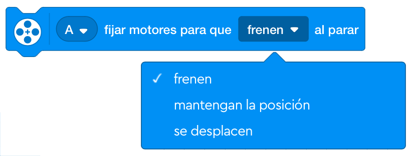
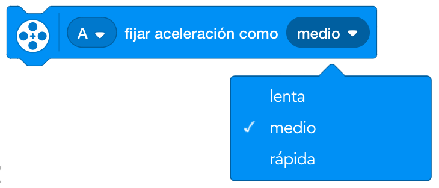

Los bloques de motor hacen que los motores funcionen u obtienen información de los motores. La categoría de
bloques de motor contiene los bloques de motor más comunes.
Los bloques de motor son los bloques azules de la parte superior de la paleta de bloques. En esta categoría
de bloques hay un total de 7 bloques; 5 bloques de pila y 2 bloques de reportero
Selector de puerto:
Utiliza el selector de puertos para seleccionar los motores que deseas controlar con el bloque. Puedes
seleccionar uno o más motores presionando su letra.
Selector de dirección:
Utiliza el selector de dirección para elegir si el motor o motores deben moverse en el sentido de las
agujas del reloj o en sentido contrario a las agujas del reloj.
Selector de modo:
Utiliza el selector de modo para elegir cómo funcionarán los motores. Tiene tres modos: rotaciones, grados y
segundos.

Nota importante: Los bloques del motor sin campo de entrada de velocidad operarán el/los motor/s en la velocidad predeterminada del 75%, pero la velocidad podría definirse colocando un bloque de velocidad del motor establecido antes del bloque elegido.
Este bloque hará funcionar uno o más motores en sentido horario o en sentido antihorario durante un número
especificado de rotaciones, segundos o grados.
Utiliza el selector de puertos para elegir entre los puertos A-F los motores que deben funcionar, luego
selecciona la dirección de rotación los motores desde el selector de dirección, y usa el selector de modo
para elegir el modo con el que deben operar los motores, a partir de rotaciones, grados y segundos. El campo
de entrada junto al modo es para agregar cuánto tiempo deben girar los motores.
No incluye un campo de entrada de velocidad. Los motores seleccionados funcionarán a la velocidad
predeterminada (75%) a menos que se haya agregado un bloque "Establecer la Velocidad del Motor" antes de
este bloque.

Este bloque hará funcionar uno o más motores en el sentido horario, en sentido antihorario o en la dirección
del camino más corto hasta la posición especificada.
Utiliza el selector de puertos para elegir entre los puertos A-F los motores que deben funcionar, luego
selecciona cómo deben alcanzar los motores la posición.
La posición varía de 0 a 359 grados.
Como el bloque de posición del motor no incluye un campo de entrada de velocidad, los motores seleccionados
alcanzarán la posición elegida en la velocidad predeterminada (75%) a menos que se haya añadido un bloque de
"Establecer la Velocidad del Motor" antes de este bloque.

Este bloque hará funcionar uno o más motores en el sentido horario o en sentido antihorario de forma
permanente hasta que se le indique al motor que haga otra cosa o el programa se detenga.
Utiliza el selector de puertos para elegir entre los puertos A-F, los motores que deben arrancar. Luego
selecciona la dirección de rotación de los motores en el selector de dirección.
Como el bloque del motor de arranque no incluye un campo de entrada de velocidad, los motores seleccionados
funcionarán a la velocidad predeterminada (75%) a menos que se haya añadido un bloque de "Establecer la
Velocidad del Motor" antes de este bloque.

Este bloque detiene el funcionamiento de uno o más motores. El motor se frenará, pero no mantendrá su
posición una vez que se haya detenido.
Utiliza el selector de puertos para elegir entre los puertos A-F los motores que deben detenerse.

Este bloque establece la velocidad de uno o más motores. El rango de velocidad es de -100 a 100. Los valores
negativos invertirán la dirección de rotación del motor.
Utiliza el selector de puertos para elegir entre los puertos A-F los motores que desea configurar sus
velocidades.

Este bloque informa de la posición actual de un motor en grados de 0 a 359.
Utiliza el selector de puertos para elegir entre los puertos A-F el motor que deseas que informe de su
velocidad.

Este bloque informa de la velocidad actual de un motor. El valor dado es la velocidad real del motor, no la
velocidad establecida.
Utiliza el selector de puertos para elegir entre los puertos A-F el motor que deseas que informe de su
velocidad.

Se podrían añadir más bloques de motor a la paleta de bloques añadiendo la extensión "Más Motores" de la
biblioteca de extensiones. Esta extensión incluye 10 bloques de motor más (7 pilas, 2 contadores y 1
booleano).
Para acceder a la biblioteca de extensiones, presiona el botón de extensiones, debajo de las categorías de
bloques. Luego aparecerá una nueva categoría de bloques al final de la paleta de bloques con el nombre "Más
Motores".
Este bloque hará funcionar uno o más motores a una posición relativa, a la velocidad especificada.

Este bloque establece la posición relativa de uno o más motores en un valor especificado.
Usa un valor de O para restablecer la posición relativa

Este bloque informa de la posición relativa actual de un motor.

Este bloque hará funcionar uno o más motores a una velocidad especificada como porcentaje.

Este bloque devuelve, como porcentaje, el nivel de potencia utilizado actualmente por un motor específico.

Este bloque determina cómo se detendrán los motores seleccionados utilizando tres modos: frenen, mantener la posición o se desplacen.

Este bloque fija la aceleración en el arranque del motor a lenta, media o rápida.
